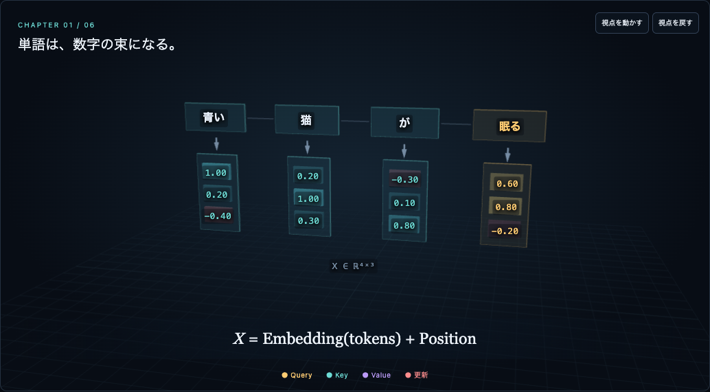
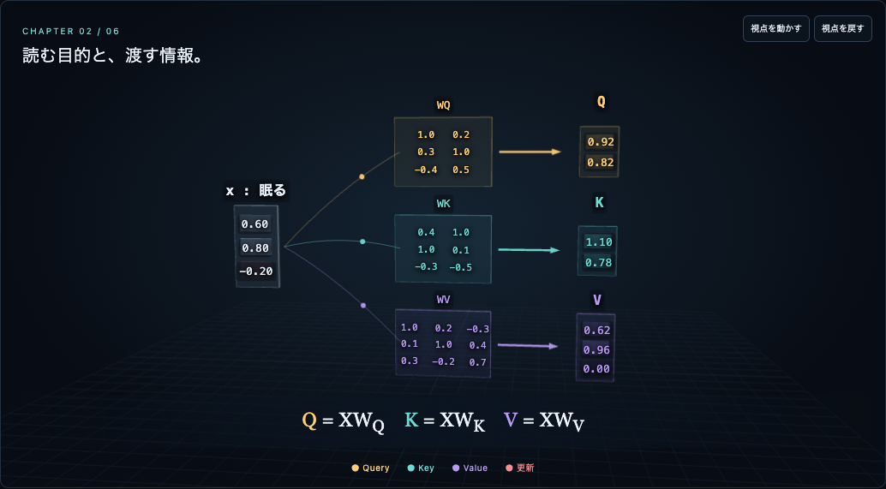
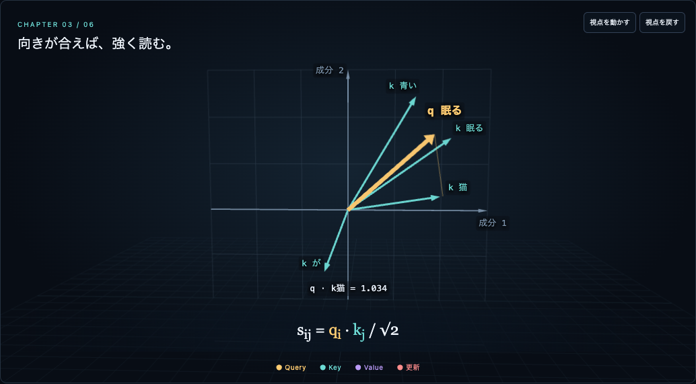
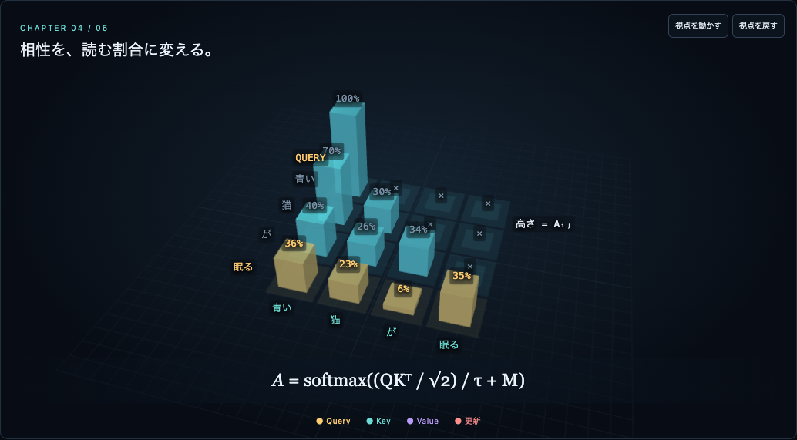
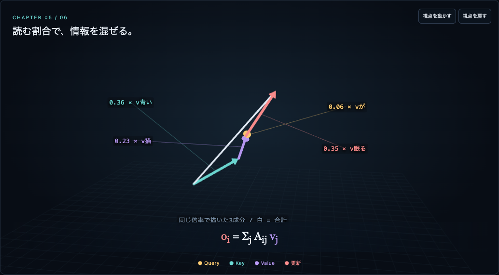
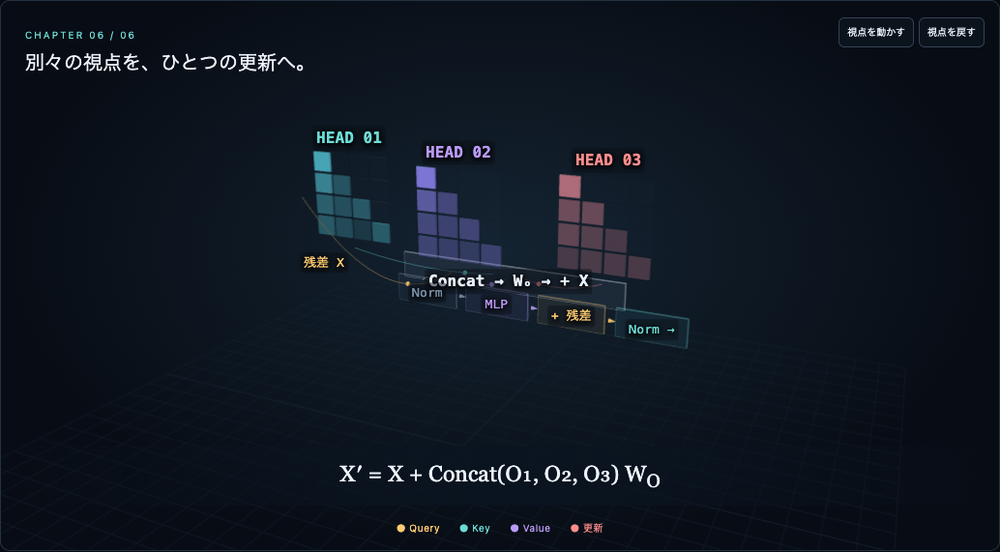

VERIFIED · 2026-09-09
公開ページを、実際に動かして確認。
HTTP の成功だけでなく、公開 URL を Chrome / Playwright で開き、WebGL の描画・スクリーンショット・操作と数値を確認しました。モバイルはブラウザの画面サイズ／タッチのエミュレーションであり、実機試験ではありません。
| 検証 | 結果 |
|---|---|
| 独立した数式再計算・不変条件 | 116 / 116 成功。3 head × マスク2種 × 温度3種 × Value倍率3種 = 54設定を含む |
| 公開UIの操作 | 24 / 24 成功。Query、head、温度、Value、マスク、章移動、シーク、再生／停止、回転、視点復帰、リセット |
| 最終レイアウト | 1440 / 390 / 320px、6章ずつ18状態でWebGL描画・横スクロールなし |
| 終了後の再生・停止・数値表 | 12 / 12 成功。3画面幅で14数値表を開いても横にはみ出さない |
| 連続タイムライン | 150秒を2倍速で最後まで再生。6章すべてを通過。全章でカメラ座標が変化 |
| タッチ・動きを減らす設定 | タッチで章選択成功。reduced-motionでは自動再生せず停止から開始 |
| 例外・取得失敗 | 全編再生試験でページ例外0・HTTPエラー0 |
| Safari / WebKit / Firefox | 未検証。WebKit実行バイナリがなく起動不可。実機GPUの性能も未測定 |
最初の再生し直しテストは「終了直前」と「終了後」を取り違えた判定でした。終了状態150.0秒から再試験し、3画面幅すべて成功しています。これは全検証ログで「失敗が一度もなかった」という主張ではありません。
公開ページから取得した描画画像
章の途中／後半の実際の WebGL 出力です。参考動画の画像ではありません。静止画が全フレームの視認性や完全再現を証明するものではありません。
{kind=link}

{kind=link}

{kind=link}

{kind=link}

{kind=link}

{kind=link}

限界
説明用の固定値です。学習済みモデルの推論・Norm/MLPの数値計算・音声ナレーションは含みません。参考3映像はMP4から計60フレームを目視確認した範囲で、全編の連続視聴・音声確認・忠実な再現ではありません。公開先は GitHub Pages の固定パスです。上記の詳細テストとギャラリーは同じアプリコードを一時URLで検証した際の記録です。固定URLでの再検証は別記録として保管します。